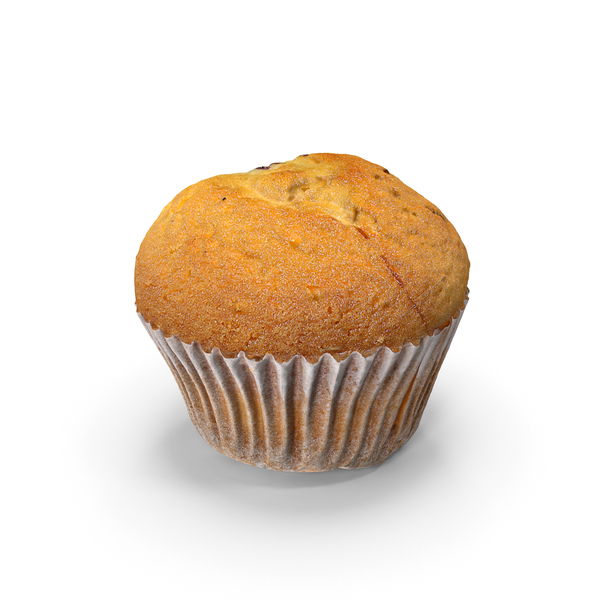

Ingredients
- 2 cups all-purpose flour
- 3 teaspoons baking powder
- ½ teaspoon salt
- ¾ cup white sugar
- 1 large egg
- 1 cup milk
- ¼ cup vegetable oil
Process
Gather all ingredients. Preheat the oven to 400 degrees F (200 degrees C). Grease a 12-cup muffin tin or line cups with paper liners.Stir flour, baking powder, salt, and sugar together in a large bowl; make a well in the center.Beat egg with a fork in a small bowl or 2-cup measuring cup; whisk in milk and oil.Pour egg mixture all at once into flour mixture; mix quickly and lightly with a fork until just moistened. The batter will be lumpy.Spoon batter into the prepared muffin cups, filling each 3/4 full.Bake in the preheated oven until tops spring back when lightly pressed, about 25 minutes.Enjoy!